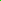

0 background
Disclaimer: The color samples may not be displayed properly.
The Pre-Defined Default Colors in GrADS
The Default Rainbow Palette
Defining New Colors
Transparent Colors
Overriding the Default Palette
Plotting Contours of Constant Color
Omitting Colors
Plotting Non-Continuous Index Grids
The Pre-Defined Default Colors in GrADS
GrADS is built with 16 default colors that are used in a variety of applications. Every color in GrADS has a unique color number that is used as an index to identify it in GrADS commands. Complete specifications of the default colors numbered 0 to 15 are given below:
Col# Description Sample R G B
0 background0 0 0 (black by default) 1 foreground
255 255 255 (white by default) 2 red
250 60 60 3 green  0 220 0 4 dark blue
30 60 255 5 light blue
0 200 200 6 magenta 240 0 130 7 yellow
230 220 50 8 orange 240 130 40 9 purple
160 0 200 10 yellow/green
160 230 50 11 medium blue
0 160 255 12 dark yellow
230 175 45 13 aqua
0 210 140 14 dark purple
130 0 220 15 gray
170 170 170
Disclaimer: The color samples may not be displayed properly.
GrADS creates a default rainbow palette using the following sequence of 13 built-in colors:
| 9 | 14 | 4 | 11 | 5 | 13 | 3 | 10 | 7 | 12 | 8 | 2 | 6 |
When drawing contour plots, the default behaviour of GrADS is to color code the contours and select an appropriate contour interval so that each contour is a different color and the colors span the range of the default rainbow sequence. The same principle is behind the selection of default contour intervals for filled contours and shaded grid plots.
The scripts "cbar.gs" and "cbarn.gs" will
draw a color key alongside a plot of filled contours or shaded grid
cells; the script uses the query
shades command to get information about the contour levels
and their color shades.
For some graphics, the 16 GrADS default colors may not be
suitable or adequate. It is possible for the user to define new colors
using the set rgb command:
set rgb color# R G B
For example, to create a palette of colors for plotting anomalies, you can define new colors that will be shades of blue and red that range in intensity from fully saturated to very light. White will be the color in the center of the new anomaly palette.
* These are the BLUE shades set rgb 16 0 0 255 set rgb 17 55 55 255 set rgb 18 110 110 255 set rgb 19 165 165 255 set rgb 20 220 220 255 * These are the RED shades set rgb 21 255 220 220 set rgb 22 255 165 165 set rgb 23 255 110 110 set rgb 24 255 55 55 set rgb 25 255 0 0
Starting with GrADS version 2.1, there is an addional optional argument that may be used to set a transparency level for a user-defined color.
set rgb color# R G B <A>
Color Masking for Transparent Colors
A filled region on a plot is achieved by shaded contouring, filling land/ocean areas using basemap.gs, or drawing a shapefile with filled polygons. The filled areas usually consist of a large number of polygons that appear as one solid region. When filling such an area on the plot using a semi-transparent color, spurious lines may appear at the polygon boundaries or in areas where the polygons overlap. This is due to the alpha channel value being applied twice to the same set of pixels.
To avoid this, you can plot a semi-transparent color value using a color mask. How this operates "under the hood" is somewhat like double buffering. When the masked color number is encountered, a mask is set up, the same size of the screen image. While that color number is being plotted, the plotting is done to the mask image instead. The mask image can be thought of as simply zeros and ones -- 0 indicating that the color has not been drawn there, 1 that it has. When this action is terminated, at the conclusion of a 'draw' or 'display' command or when another color number is being used, then the "masked" color is drawn to the main plot using a masked paint operation, where the color is painted to the plot everywhere where the mask image was 1.
There are some drawbacks to using masked colors. The masked region is an image operation, so the boundaries may appear jagged -- pixelated -- if the plot is rendered at sufficiently low resolution. There may also be a performance penalty for using masked colors. It is a good idea to avoid using masked colors unless absolutely necessary. It is not necessary to use masked colors for "set gxout shade2" because the new shaded contouring algorithm is very well behaved. In version 2.1+, shade2 is the default algorithm used for 'set gxout shaded'. Color masking should be used for the old shading algorithm ('set gxout shade1') or when drawing shapefiles with the polygons set to be filled.
To set a color to be masked, simply specify its alpha channel value as negative. The positive of that value will be used to draw the actual color, when rendered via the mask. For examples, please look here and here.
Overriding the Default Palette
Now that we have a set of newly defined colors (numbered 16-25), we can override the defaults and specify our anomaly palette with exact contour levels and the colors that go with them. This is accomplished by using the following commands:
set clevs lev1 lev2 lev3 ... levN
set ccols col1 col2 col3 ... colN
Contour levels and the colors that go with them are reset with every
execution of clear or
display. Thus, it may be
easier to use these commands in a script to avoid typing them over and
over again.
Filled Contours or Shaded Grids: If you are specifying
the levels and colors for filled contours (set gxout shaded) or shaded
grid cells (set gxout
grfill), then the number of colors specified with set ccols must be one larger than the
number of contour levels specified with set clevs. Continuing with our
example of creating an anomaly palette, the commands would have the
following syntax:
set gxout shaded
set clevs -5 -4 -3 -2 -1 1 2 3 4 5
set ccols 16 17 18 19 20 1 21 22 23 24 25
Note the "0" contour level has been omitted, but color number "1" is still in
the palette. Drawing a plot with these specified clevs
and ccols and then running the "cbarn.gs" script will
result in the following color key:
Here is example using 6 colors and 5 contour levels that shows how the filled contours (or shaded grids) relate to the data values:
col1: values <= lev1 col2: lev1 < values <= lev2 col3: lev2 < values <= lev3 col4: lev3 < values <= lev4 col5: lev4 < values <= lev5 col6: lev5 < values
Line Contours: If you are specifying the levels and
colors for line contours (set
gxout contour), then the number of arguments to set clevs and set ccols should be equal -- one
color for each contour.
Plotting Contours of Constant Color
It is sometimes preferable to plot line contours without the rainbow
coloring. An example might be a plot with sea level pressure contours
in one color (red) and 500 mb height contours overlaid in another
color (blue). For drawing all the contours in the same color, use the
set ccolor command:
set gxout contour
set ccolor 2
d slp
set ccolor 4
d z(lev=500)
The default behavior of GrADS when plotting filled contours or shaded grid cells is to colorize all areas. To omit a particular color (or contour level) from the plot, simply assign the background color. For example:
set gxout shaded
set clevs -5 -4 -3 -2 -1 1 2 3 4 5
set ccols 0 17 18 19 20 0 21 22 23 24 0
This example is similar to the one given above, but notice where some
of the ccols have been set to "0" (the background
color). The first, last, and middle colors have been omitted. These
commands set up a plot that will only shade areas where the anomalies
are between 1 and 5 and -1 and -5. The remaining areas will be black (or white, depending on what the background color is set to be.)
When using version 2.0.0+ and 'gxout shade2' or 'gxout shade2b', if any of the color numbers is < 0, the contour is not drawn at all (i.e., it is effectively transparent). In version 2.1+, the 'set gxout' option 'shaded' is an alias for 'shade2'.
Plotting Non-Continuous Index Grids
Plotting grids with index values or non-continuous data (e.g. surface
type classification) is simplified by using the graphics output type
fgrid and the set
fgvals command.
set gxout fgrid
set fgvals 1 15 2 5 3 1
d sfctype
In this example, the variable "sfctype" has three values:
1 represents land, 2 represents oceans, and
3 represents sea ice. These commands would draw a plot
with land grid cells filled with color number 15 (gray), ocean grid
cells filled with color number 5 (light blue), and sea ice grid cells
filled with color number 1 (white). If the first two arguments to set fgvals were omitted, then the
land grid cells would not be omitted and only ocean and sea ice grid
cells would be colored.